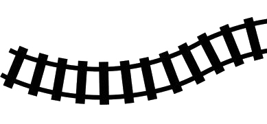

Jonnine Standish is an acclaimed art director and musician, perhaps best known as one-half of the lauded minimal electronic duo, HTRK. Thematically her lyrics explore the body’s reaction to work and loss using sex drive and humour as themes and devices.
Jasmin Tarasin is a renowned film director, drawn to her craft by her fascination for finding the essence and beauty in between the layers of reality. She has directed over 20 music videos along with memorable television commercials internationally and nationally.
Heckler is one of Australia’s most exciting boutique post production companies specialising in film and TVC VFX, post production, 3D effects and animation, branded content, broadcast design, music videos and digital creative production with a focus on producing original creative coupled with outstanding execution.
ENESS is an award winning art and design practice based in Melbourne Australia. They transform ordinary spaces and places into meaningful, interactive experiences. Their work has been exhibited worldwide in Museums of modern art, the Frenchiest of snowy alps, to the streets of Mumbai.
Brustman+Boyde are an Australian art and design partnership between Michelle Boyde and Danielle Brustman. The pair combine their skills and extensive experience working in the realms of interior, fashion, theatre, costume and exhibition design to offer unique interdisciplinary design products and packages.
Mika Vainio was one half of the minimal electronic duo Pan Sonic from Finland. His solo works, under his own name and under aliases like Ø, are known for their analogue warmth and electronic harshness. Be it abstract drone works or minimal avant techno, Vainio has always created unique, physical sounds.
HTRK originates from Melbourne. After six years in London, both Standish and Yang returned to Australia in 2012. They have produced three critically acclaimed studio albums along with multiple EP’s.
Lawrence English is a media artist, composer and curator based in Australia. Working across an eclectic array of aesthetic investigations, English’s work prompts questions of field, perception and memory.
Liza McLean has worked in the entertainment industry in Australia and overseas for the past twenty years, working for and collaborating with extraordinary Producers, Directors and some of worlds’ finest actors, singers and performers. In 2005 she formed Tinderbox Productions Pty Ltd and is the sole director. Tinderbox Productions Theatrical credits include, North by Northwest, Little Shop of Horrors, The Graduate, 2015 Co-Producer National Tour of Sweet Charity starring Verity Hunt-Ballard, 2014 Australian Producer of the International touring production of The Last Confession, starring David Suchet., 2013 Co Producer The Chichester Festival Theatre Production, The Resistible Rise of Arturo Ui starring Henry Goodman (West End).